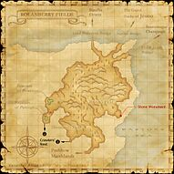

Description
Rolanberry Fields is an outdoor area in Derfland.
Map
Involved in Quests / Missions
| Quest / Mission | Type | Starter | Location |
|---|---|---|---|
| An Explorer's Footsteps | Map | Abelard | Selbina (pos=G-9) |
| Ducal Hospitality | General | Taillegeas | Ru'Lude Gardens (pos=I-7) |
| Fear of Flying | General | Kurando | Port Bastok (pos=H-6) |
NPCs
- Atmacite Refiner
- Legion Tome
- Marlena
- Mayuyu
- Pellio
- Saarlan
- Voidwatch Officer
Notorious Monsters
| Name | Level | Drops | Steal | Family | Spawns | Notes |
|---|---|---|---|---|---|---|
| Black Triple Stars | 26-27 | Bat Fang Bat Wing Beastman Blood | — |  Bat TriosImage source Bat TriosImage source | — | L, H |
| Drooling Daisy | 39-40 | Dodge Headband Malboro Vine | Malboro Vine |  MorbolsImage source MorbolsImage source | — | No minimum respawn; A, H |
| Silk Caterpillar | 28-30 | Silk Thread Silkworm Egg | — |  CrawlersImage source CrawlersImage source | — | A, L, H, Sc |
| Simurgh | 58 | Arcana Breaker Damascus Ingot Reraiser Strider Boots Vile Elixir | — |  RocsImage source RocsImage source | — | Respawn: 24 hours; A, S |
Regular Monsters


Story walkthroughs in this area
| Story | Mission / quest |
|---|---|
| WotG 1 | Cavernous Maws |
| WotG 40 | Edge of Existence |
| ACP 3 | Gatherer of Light (I) |
References
External references describe their own server or retail rules. Documented Zenith changes take precedence.
Map credits: Map 1 — HorizonXI Wiki. Original game maps © SQUARE ENIX; redrawn maps retain the credited authorship and license.

Supplemental NPC names and exits are from the base-world snapshot; expansion conditions can affect availability.
Additional level-75 reference


|
For centuries, this area has been used to cultivate fields of the sweet fruit known as the rolanberry. Considered a delicacy by Humes and the Elvaan, the farmers in this region have perfected their methods of agriculture and are now able to harvest the sweet berries year round. Three great bridges at the Rolanberry Fields' northeastern tip connect the region with its neighboring areas: the Lord Bolicevre Bridge leads to the Batallia Downs, the Market Bridge leads to the Grand Duchy of Jeuno, and the Great Jeuno Bridge grants access to the Sauromugue Champaign. |
Connecting Areas
Involved in Quests/Missions
|
Quest |
Type |
Starter |
Location |
| An Explorer's Footsteps | Maps | Abelard | Selbina (H-9) |
| Fear Of Flying | General | Kurando | Port Bastok (H-7) |

Notorious Monsters Found Here
|
Name |
Level |
Drops |
Steal |
Family |
Spawns |
Notes | |||||||
|
26-27 |
|
2 |
L, H | ||||||||||
|
39-40 |
1 |
A, S | |||||||||||
|
28-30 |
1 |
A, L, H, Sc | |||||||||||
|
58 |
1 |
A, S | |||||||||||
|
HP = Detects Low HP; M = Detects Magic; Sc = Follows by Scent; T(S) = True-sight; T(H) = True-hearing JA = Detects job abilities; WS = Detects weaponskills; Z(D) = Asleep in Daytime; Z(N) = Asleep at Nighttime | |||||||||||||
Mobs Found Here
|
Name |
Level |
Drops |
Steal |
Family |
Spawns |
Notes | |||||||
| Berry Grub | 25-28 | Crawler | 91 | L, H, Sc | |||||||||
Big Jaw
|
20-23 | Pugil | Fished up | A, H | |||||||||
Big Leech
|
34-36 | Leech | Fished up | A, H, Sc | |||||||||
| Brass Quadav | 26-30 | Quadav | 4 | A, L, S | |||||||||
| Bronze Quadav | 30-36 | Quadav | 4 | A, L, H | |||||||||
| Clipper | 23-25 | Crab | 13 | H | |||||||||
| Copper Quadav | 26-30 | Quadav | 4 | A, L, H | |||||||||
| Death Wasp | 22-26 | Bee | 58 | L, S, Sc | |||||||||
Fire Elemental
|
38-40 | Elemental | 3 | M | |||||||||
Water Elemental
|
38-40 | Elemental | 3 | M | |||||||||
Evil Spirit
|
35-38 | Ghost | 5 | A, H, HP | |||||||||
| Evil Weapon | 36-38 |
|
Evil Weapon | 6 | A, H, M | ||||||||
| Garnet Quadav | 30-36 | Quadav | 4 | A, L, H | |||||||||
Goblin's Bee
|
23-35 | Bee | 6 | H, Sc | |||||||||
| Goblin Digger | 28-32 | Goblin | 1 | A, L, S | |||||||||
| Goblin Furrier | 30-36 | Goblin | 6 | A, L, S | |||||||||
| Goblin Gambler | 26-30 | Goblin | 6 | A, L, S | |||||||||
| Goblin Leecher | 26-30 | Goblin | 6 | A, L, S | |||||||||
| Goblin Mugger | 26-30 | Goblin | 6 | A, L, S | |||||||||
| Goblin Pathfinder | 30-36 | Goblin | 6 | A, L, S | |||||||||
| Goblin Shaman | 30-36 | Goblin | 6 | A, L, S | |||||||||
| Goblin Smithy | 30-36 | Goblin | 6 | A, L, S | |||||||||
| Goobbue Farmer | 28-32 | Goobbue | 12 | A, H | |||||||||
Greater Pugil
|
31-33 | Pugil | Fished up | A, H | |||||||||
Horrid Fluke
|
28-30 | Leech | Fished up | A, H, Sc | |||||||||
Ignis Fatuus
|
34-36 | :?? | Bomb | 3 | A, S, M | ||||||||
Midnight Wings
|
20-23 | Bat Trio | 75 | L, H | |||||||||
Moon Bat
|
23-26 | Giant Bat | 40 | L, H | |||||||||
| Ochu | 34-37 |
|
Morbol | 30 | A, H | ||||||||
| Old Quadav | 26-30 | Quadav | 4 | A, L, H | |||||||||
| Poison Leech | 24-26 | Leech | 15 | L, H, Sc | |||||||||
| Silver Quadav | 30-36 | Quadav | 4 | A, L, H | |||||||||
Wight
|
26-36 | Skeleton | 9 | A, H, HP | |||||||||
| Zircon Quadav | 30-36 | Quadav | 4 | A, L, H | |||||||||
|
HP = Detects Low HP; M = Detects Magic; Sc = Follows by Scent; T(S) = True-sight; T(H) = True-hearing JA = Detects job abilities; WS = Detects weaponskills; Z(D) = Asleep in Daytime; Z(N) = Asleep at Nighttime | |||||||||||||
Adapted from Eden Wiki: Rolanberry Fields · Contributors and history · CC BY-SA 4.0. Revision 45487. Layout, links and optional background text adapted for Zenith.